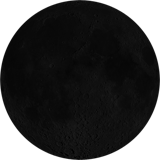
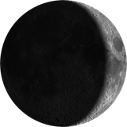
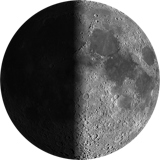
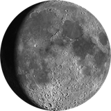
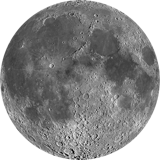
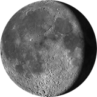
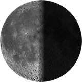
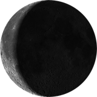
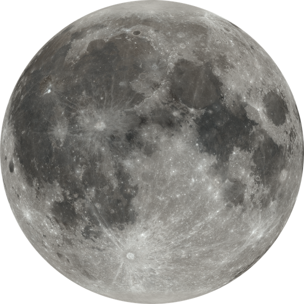

Veladas escultóricasObservación por telescopioTalleres de ciencia recreativaRecorridos museográficosConversatorios y charlasCampamentos astronómicosCursos de formación en divulgaciónDiseño de experienciasCiencia y arteGestión científico-culturalProyectos interdisciplinaresFerias científicas y eventos temáticos
Veladas
Veladas Escultóricas
Una escultura nos habla de quien la hizo y de su forma, pero también guarda ciencia: geometría, materia, naturaleza. En cada velada la miramos como parte de un paisaje en el que el cielo, su entorno natural y los ojos que la ven también tienen un papel.
Fases · 29 días 12 h 44 min 2.877 s en promedio · cada ciclo varía ±7 h

Nueva

Creciente

C. creciente

Gibosa crec.

Llena

Gibosa meng.

C. menguante

Menguante

Mares
Mar de la Tranquilidad
Mar de la Serenidad
Mar de las Crisis
Océano de las Tormentas
Mar de las Lluvias
Mar de la Fecundidad
Mar de las Nubes
Cráteres y llegadas a la Luna
Copérnico
Tycho
Apolo 11 · 1969, primeras personas
384,400 kmde distancia: su luz tarda 1.3 segundos27.3 díasgira sobre sí misma y nos rodea al mismo ritmo: siempre vemos la misma cara3.8 cmse aleja de nosotros cada año
Imagen: NASA's Scientific Visualization Studio (CGI Moon Kit), con datos de Lunar Reconnaissance Orbiter.
El espacio
El espacio
Del tamaño humano al universo
Tú: unos 1.7 m.
El Everest: 8,849 m de altura.
La Luna: 3,474 km de diámetro.
La Tierra: 12,742 km.
Júpiter: 139,820 km.
El Sol: 1.39 millones de km; caben 109 Tierras a lo ancho.
El Sistema Solar, hasta Neptuno: unos 9,000 millones de km.
La Vía Láctea: unos 100,000 años luz.
El Grupo Local de galaxias: unos 10 millones de años luz.
Laniakea, nuestro supercúmulo: unos 520 millones de años luz.
El universo observable: unos 93,000 millones de años luz.
Mirar lejos es mirar al pasado
La luz de Andrómeda que ves esta noche salió de ahí hace unos 2.5 millones de años. En avión, a 900 km/h, tardaríamos unos 3 billones de años en llegar; en coche, a 100 km/h, unos 27 billones: casi 2,000 veces la edad del universo.
El tiempo
El tiempo
Hace cuánto se formó
El universo: hace unos 13,800 millones de años.
Las primeras galaxias: hace más de 13,000 millones.
El Sistema Solar y la Tierra: hace unos 4,600 millones.
La primera vida: hace unos 3,500 millones.
Los primeros humanos: hace unos 300,000 años.
Si toda la historia del universo cupiera en un año, los humanos apareceríamos en los últimos 11 minutos del 31 de diciembre.
Los mexicas llevaban dos cuentas: el xiuhpohualli, de 365 días, y el tonalpohualli, de 260. Volvían a coincidir cada 52 años, el xiuhmolpilli, y al cerrarse el ciclo se encendía el Fuego Nuevo.
Los ciclos del cielo
Un día · 24 horas: la Tierra gira.
Un mes · 29.5 días: las fases de la Luna.
Un año · 365.24 días: una vuelta al Sol.
Venus · 584 días: vuelve a verse igual.
Saros · 18 años y 11 días: los eclipses se repiten.
Xiuhmolpilli · 52 años: las dos cuentas mexicas coinciden.
Cometa Halley · unos 76 años: volverá en 2061.
Cuenta larga maya · 13 bʼakʼtunes, unos 5,125 años: del año 3114 a. C. a 2012.
Precesión · unos 25,800 años: cambia la estrella polar.